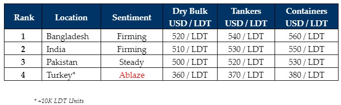

inWeekly Demolition Reports07/05/2024

Activity across the Indian sub-continent ship recycling markets has been climbing on the backof recently witnessed agitations in the trading lanes, which continue to ramp up with each passing week as a growing number of Ship Owners are biting the recycling bullet & selling their overaged but still trading vessels. Containers have been the first segment to be squeezed out by this recent dip in freight rates as several units were (and continue to be) introduced for a recycling sale. Moreover, given that much of the miniscule supply of tonnage over recent quarters has been focused on the dry and container sectors, which themselves have enjoyed eye-watering highs during / post Covid & even more since the escalation of geopolitical crises in 2023, many would consider these sectors being long overdue for a clear-out as we continue to witness impressive signs of a fervor to acquire that has come ‘dead alive’ at the bidding tables, as well as the various waterfronts of late – including Turkey, where vessel prices were seemingly torched by desperate Aliaga Recyclers who are clearly willing to go above & beyond the boundaries set by domestic fundamentals this week; in that 4K – 9K LDT units are reportedly seeing a minimum jump in prices of about $20/Ton whereas +10K LDT units are seeing over USD 40/Ton of an increase in offerings – seemingly even higher on choice units.
As such, as recycling prices inch up towards the mid USD 550s/LDT in key sub-continent markets and even approach USD 400/Ton in Turkey once again, Ship Owners are clearly comfortable at these higher overall price points and are finally happy to sell their aged units. Owners of older Bulkers – particularly Handy & Panamax units – have also been discretely testing recycling rates of late, especially as the Dry Bulk sector has enjoyed its unseasonal surge in rates, one that now looks set to recede in the near future. As the wet market also remains bullish and there remains little danger of seeing an increase in respective units’ head for recycling any time soon, several Tankers & FSOs have been delivered into India & Bangladesh of late, as Pakistan’s anchorage seems content in slowing down given that this market is just a ship shy of tallying its 2023 volume.
Overall, Bangladesh remains the primary beneficiary of units across recent times as Owners continue to hope to reach / breach the magical USD 600/LDT mark, and India remains close on the pricing heels of the market leaders, even taking Silver on the back of firming fundamentals and finally sneaking into 2nd place in the market rankings this week. Lastly, after a brief period of strong performance, Pakistan has once again receded into the background, on account of largely impractical numbers on any of the geographically well-positioned units opening in the West.
For week 18 of 2024, GMS demo rankings / pricing for the week are as below.

📄 Download PDF: Ship-recycling-market-insight-week-18-2024-Dead_Alive.pdfSource: GMS,Inc.https://www.gmsinc.net/gms_new/index.php/web